Work/Branding
Ventinove Fest
Cuneo's free festival, told to people who think there's never anything to do in town. Visual identity and communication for the 2024 edition.
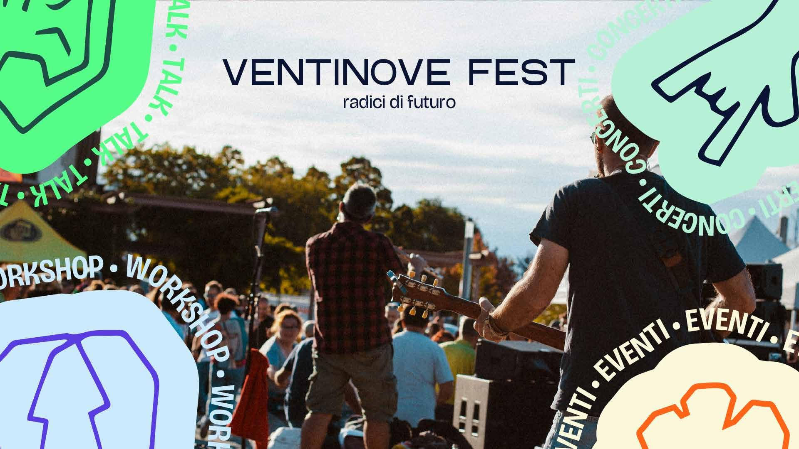
Context
Supported by the City of Cuneo, Ventinove Fest is the town's free festival held for its patron saint's day. The 2024 edition focused on the local area around Cuneo, the environment and how the pursuit of sustainability is changing our lives.
My role
I was one of the festival's organisers and handled all of its communication: defining the tone of voice, audience analysis, copywriting, and producing and managing social content.
Idea
A vibrant, human identity that takes on the belief that there's never anything to do in Cuneo.
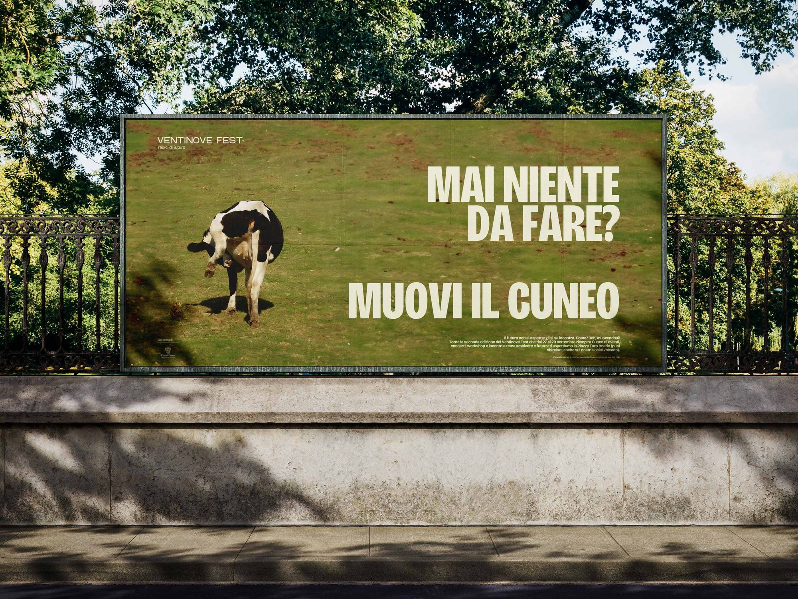
Applications
From billboards around town to the printed programme and Instagram content.
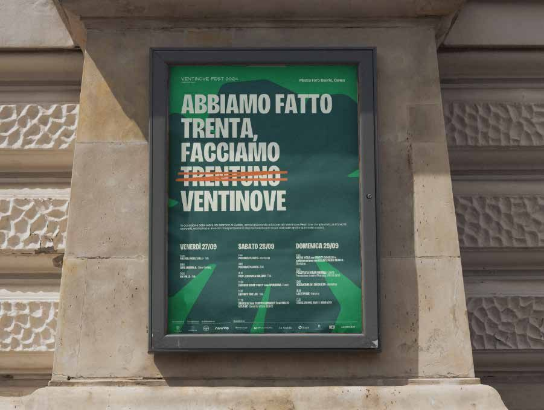
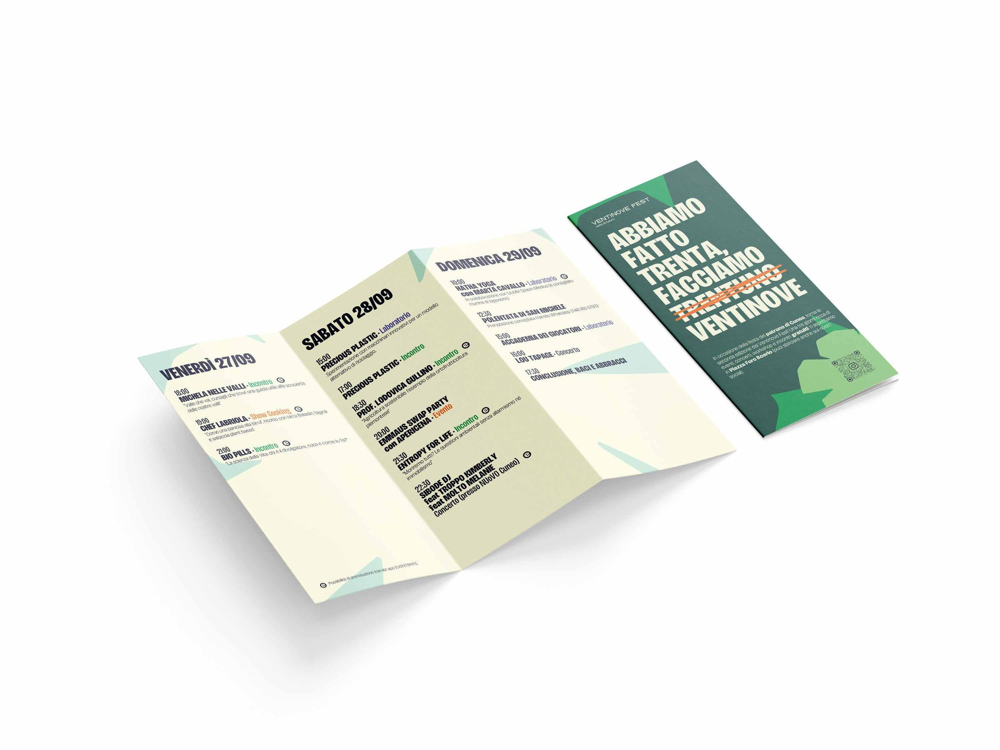
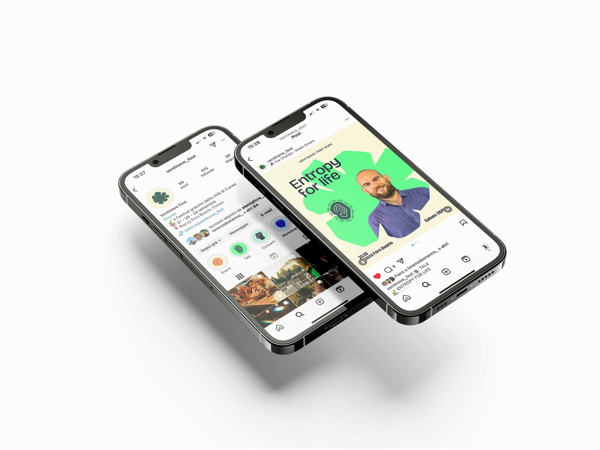
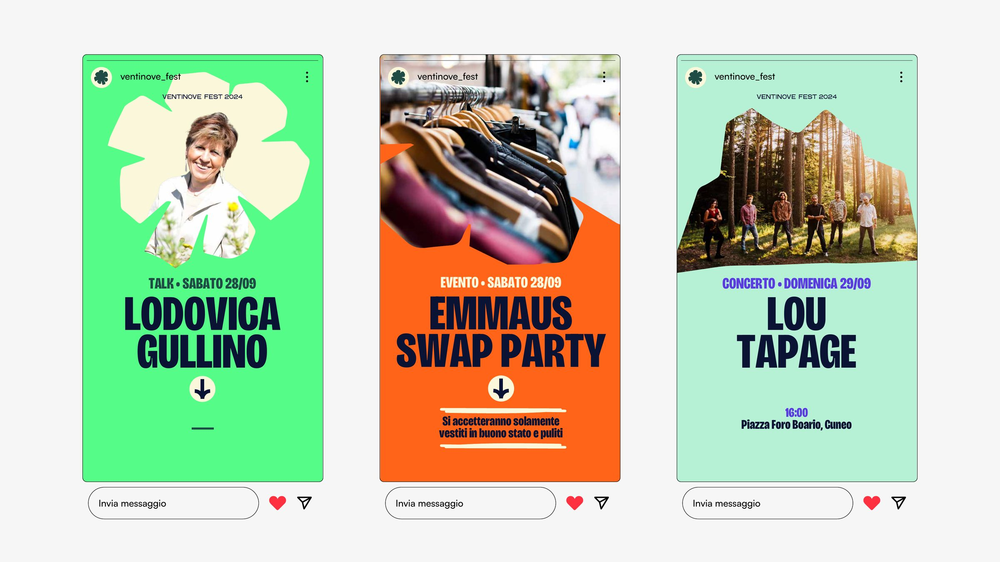
The festival
Concerts, talks and workshops over the patron saint's day weekend.
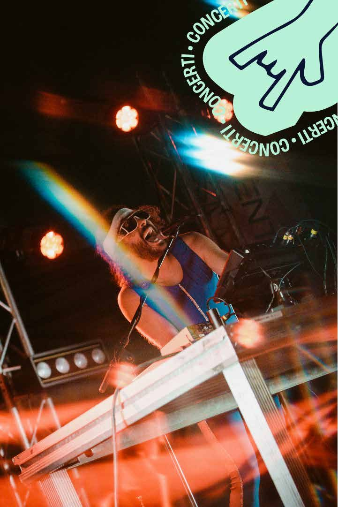
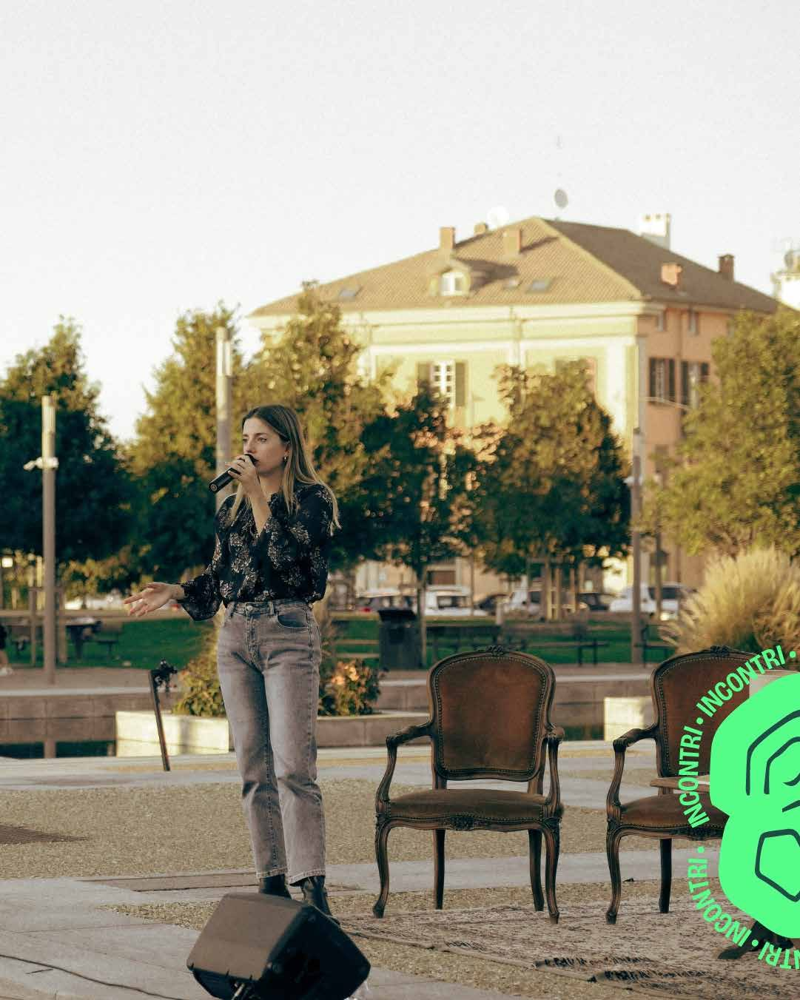
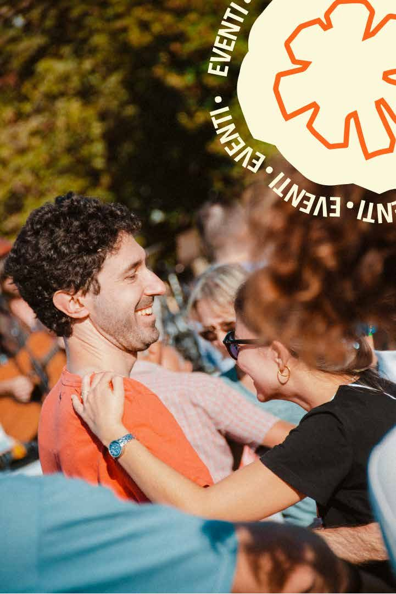
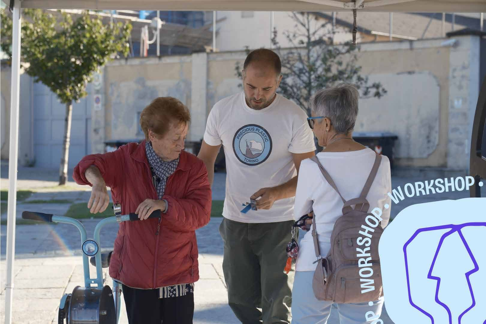
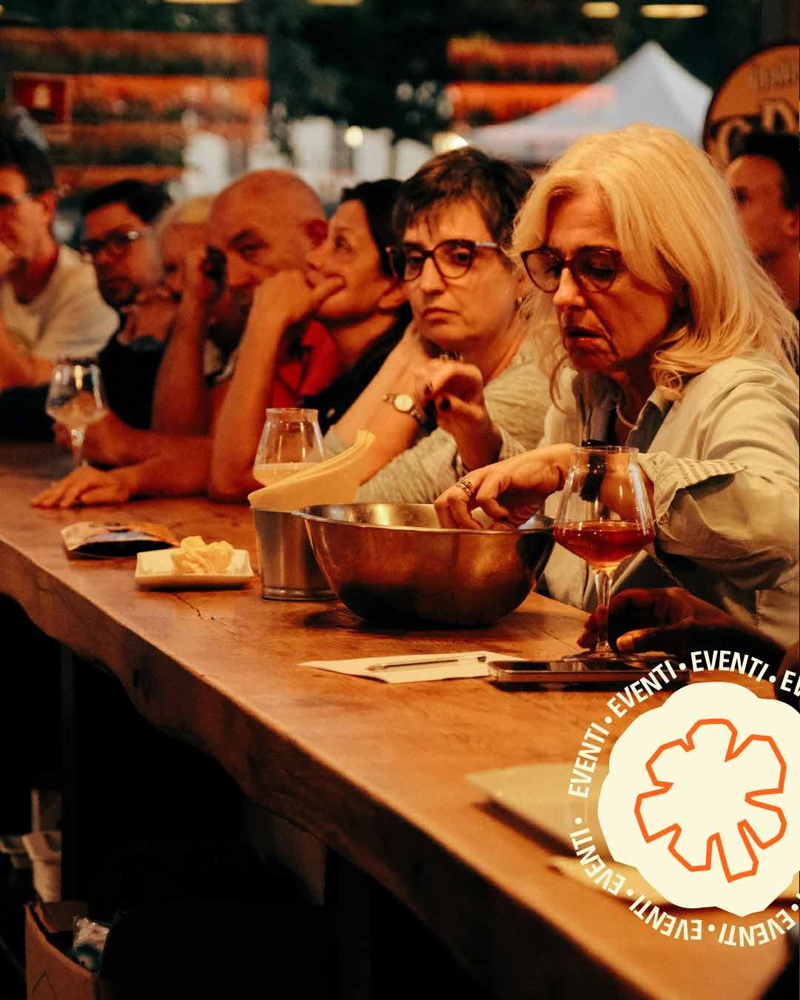